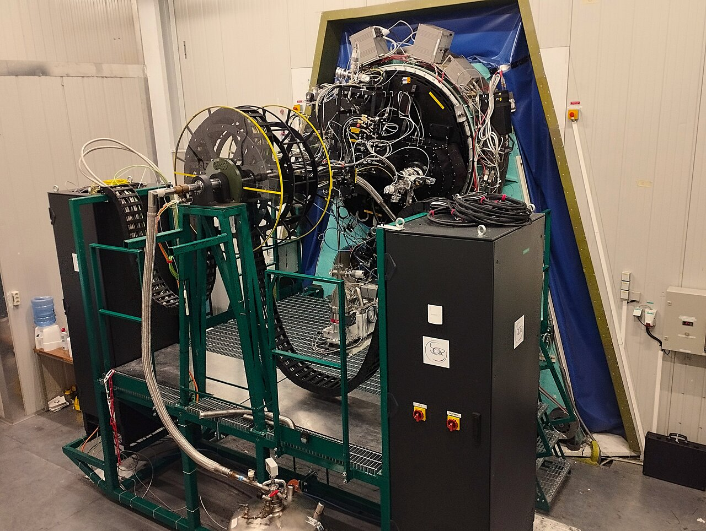

ADOPT · INAF PADOVA
Adaptive optics and astronomical instrumentation
We are a research group at INAF’s Astronomical Observatory of Padova. We study how to measure and correct distortions in light, and develop instruments for astronomical observations.
Our work connects optical design, laboratory experiments and telescope commissioning through national and international collaborations.
Our research →
Credit: P. Schipani/INAF · CC BY 4.0
What we study
Earth’s atmosphere blurs the light collected by ground-based telescopes. We develop optical techniques and instruments to help astronomers observe and measure celestial objects.
Adaptive optics
Measuring and correcting atmospheric distortion to help telescopes form sharper images.
Explore adaptive optics →Wavefront sensing
Measuring how light is distorted, using optical sensors and laboratory experiments.
Explore wavefront sensing →Astronomical instrumentation
Designing, assembling, aligning and testing instruments for use at telescopes.
Explore instrumentation →Selected projects
Examples of our work within wider instrument collaborations.
People
Researchers, technologists, doctoral researchers and collaborators work together on optical systems, instrument development and astronomical observations.